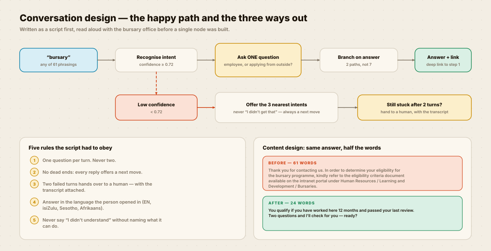
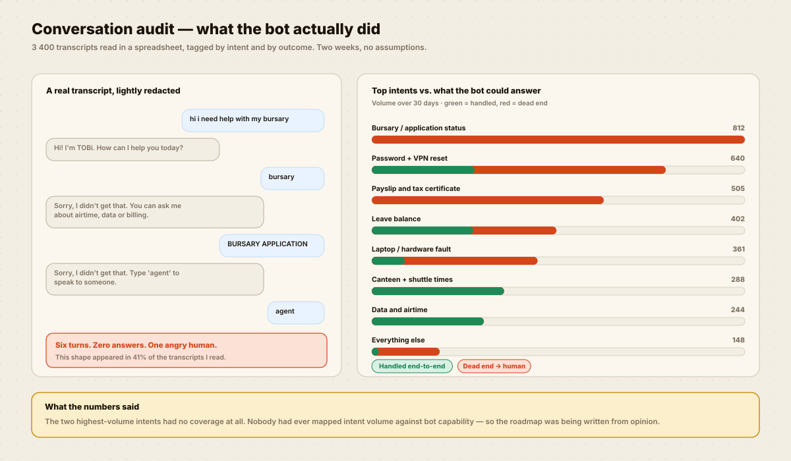
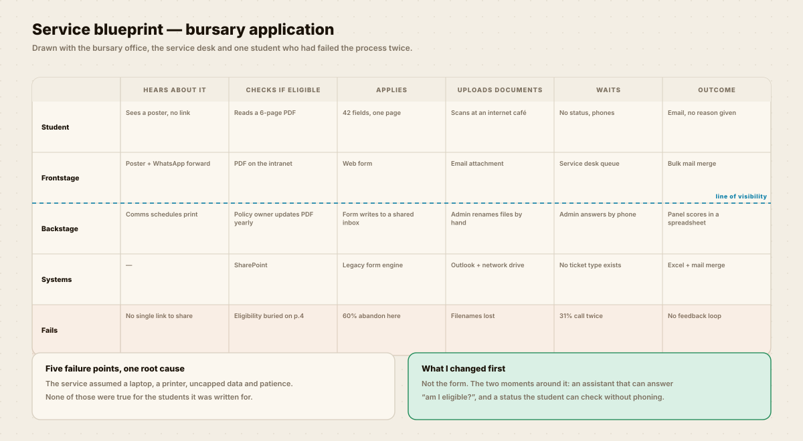

UX / UI & product design
A BOT THAT SAID SORRY,
AND A FORM NOBODY FINISHED.
Two broken halves of one service. I read 3 400 transcripts, mapped the service around them, and rewrote both the conversation and the 42-field form it kept sending people to.

The script, drawn before a single node was built. Two failed turns hands over to a human.
SIX TURNS. ZERO ANSWERS.
The assistant had a 94% “resolution” rate on the dashboard. It was counting anything that ended, including the people who gave up.

Measuring the wrong thing
“Resolved” meant the chat window closed. A person swearing and closing the tab counted as a success.
I replaced it with containment: did this person get what they came for without a human?
Where the real cost sat
Every dead end became a phone call. The bursary intent alone generated 812 conversations a month and answered none of them.
The form on the other end abandoned six people in ten.
HOW I GOT THERE.
Click a step to see the artefact.


The habit that kept it working
Every Friday I read 40 fresh transcripts and tag the misses. Three intents were added in the first two months purely because people kept asking for them.
TALK TO IT.
The real scripts, side by side. Switch between the bot I found and the bot I wrote, then ask it something.
THE FORM ON THE OTHER END.
Fixing the conversation only moves the problem if it hands people to a form they cannot finish.
WHAT CHANGED.
Eight weeks after launch, measured on the same definitions I set at the start.
The number I care about most
Repeat contacts. A single resolved chat is easy to fake; someone not coming back the next day is not.
The number that did not move
Applications from outside the organisation stayed flat. That funnel starts on a printed poster with no link on it, which is not a problem a chatbot can solve.
THE HONEST BIT.
What I got wrong, and what I still cannot prove.
What I would do differently
- I wrote the isiZulu and Sesotho copy with a translator, not with a content designer who speaks them daily. It is correct but it is stiff, and two participants said so politely.
- I built 61 phrasings for the bursary intent by hand. That should have been mined from the transcripts programmatically — it would have caught the SMS-style spellings I missed.
- Containment is not satisfaction. I have no CSAT on the new flow because we never shipped the survey, so “68% contained” is the best claim I can honestly make.
- The panel scoring at the end is still a spreadsheet. The applicant experience is fixed; the staff experience behind it is not, and that is where the next round of work should go.
WANT THIS
ON YOUR PRODUCT?
Tell me the one flow that matters most to your business and what it currently costs you. I will come back with what I would research first and what I would ship first.